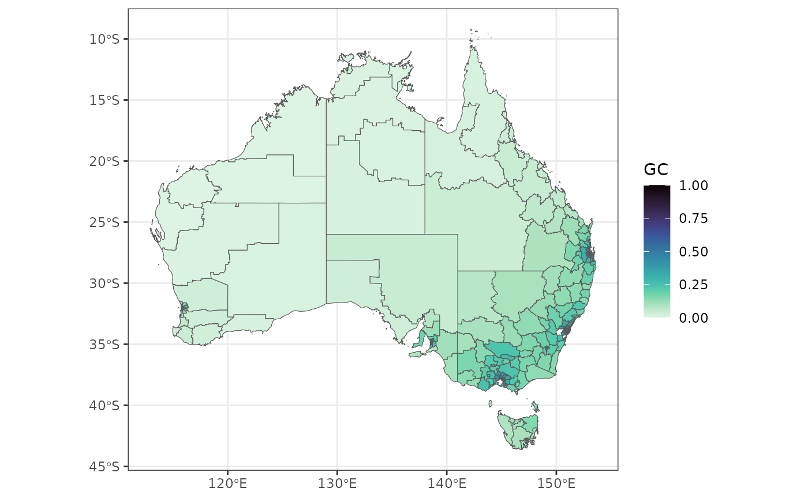

geocomplexity for spatial vector data based on geographical similarity
Source:R/geocs_vector.R
geocs_vector.RdThis function calculates geocomplexity for in spatial vector data based on geographical similarity.
Usage
geocs_vector(
sfj,
wt = NULL,
method = "spvar",
similarity = 1,
normalize = TRUE,
returnsf = TRUE
)Arguments
- sfj
An
sfobject or spatial vector object that can be converted tosfbysf::st_as_sf().- wt
(optional) Spatial weight matrix. Must be a
matrixclass. Ifwtis not provided,geocomplexitywill use a first-order inverse distance weight matrix viasdsfun::inverse_distance_swm()function.- method
(optional) When
methodisspvar, variation of the similarity vector is represented using spatial variance, otherwise shannon information entropy is used. Default isspvar.- similarity
(optional) When
similarityis1, the similarity is calculated using geographical configuration similarity, otherwise the cosine similarity is calculated. Default is1.- normalize
(optional) Whether to further normalizes the calculated geocomplexity. Default is
TRUE.- returnsf
(optional) When
returnsfisTRUE, return an sf object, otherwise a tibble. Default isTRUE.
Examples
econineq = sf::read_sf(system.file('extdata/econineq.gpkg',package = 'geocomplexity'))
gc = geocs_vector(dplyr::select(econineq,-Gini))
gc
#> Simple feature collection with 333 features and 1 field
#> Geometry type: MULTIPOLYGON
#> Dimension: XY
#> Bounding box: xmin: 112.9211 ymin: -43.63311 xmax: 153.6299 ymax: -9.223927
#> Geodetic CRS: GDA94
#> # A tibble: 333 × 2
#> GC geometry
#> <dbl> <MULTIPOLYGON [°]>
#> 1 0.210 (((149.979 -35.50246, 149.9774 -35.49025, 149.9987 -35.47874, 150.0059…
#> 2 0.155 (((148.8041 -35.71402, 148.782 -35.73665, 148.7666 -35.70281, 148.7535…
#> 3 0.147 (((150.3754 -35.56524, 150.3725 -35.55018, 150.36 -35.53485, 150.2819 …
#> 4 0.213 (((149.0114 -33.93276, 149.0057 -33.94396, 149.013 -33.96863, 149.0114…
#> 5 0.184 (((147.7137 -34.16162, 147.7126 -34.17681, 147.728 -34.18633, 147.7443…
#> 6 0.353 (((151.485 -33.39868, 151.4645 -33.39985, 151.4539 -33.37713, 151.4415…
#> 7 0.307 (((151.485 -33.39868, 151.4839 -33.38366, 151.5049 -33.35415, 151.499 …
#> 8 0.214 (((149.323 -33.05916, 149.3147 -33.10072, 149.3226 -33.1168, 149.3171 …
#> 9 0.133 (((149.1264 -33.86642, 149.1349 -33.85089, 149.1314 -33.83058, 149.115…
#> 10 0.180 (((150.5587 -32.75774, 150.5411 -32.75426, 150.527 -32.75969, 150.5182…
#> # ℹ 323 more rows
library(ggplot2)
library(viridis)
ggplot(gc) +
geom_sf(aes(fill = GC)) +
scale_fill_viridis(option="mako", direction = -1) +
theme_bw()
